1、主题
介绍Pycharm中Vagrant高级使用技巧。
2、使用内置SSH连接一个Vagrant
3、开始连接
使用Tools→Start SSH session...主菜单命令：
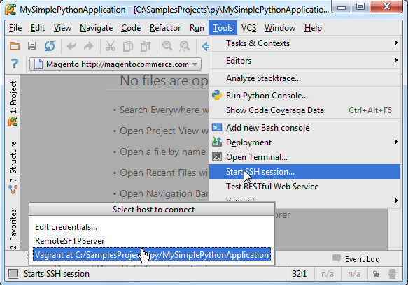
The configured Vagrant machine已经被自动添加到了列表中，单击连接。这里的Edit credentials...菜单项是用于用户手动输入连接信息，我们这里只使用virtual box。
4、使用SSH
选定Vagrant之后，Pycharm使用SSH连接到Vagrant，并在本地终端显示相关信息：
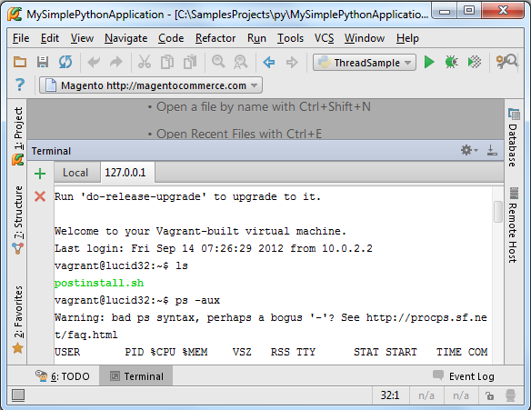
在SSH终端可以进行以下操作：
使用上下键浏览历史命令
使用剪贴板功能
5、使用共享文件夹
Pycharm允许在host和Vagrant共享文件夹。
6、添加映射路径
打开Vagrantfile文件Open Vagrantfile for editing，添加一个映射路径配置参数：
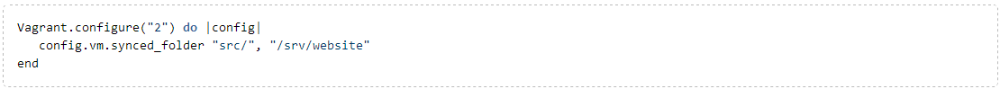
7、重载Vagrant
可以使用Tools→Vagrant→Reload主菜单命令来重新装载Vagrantfile：
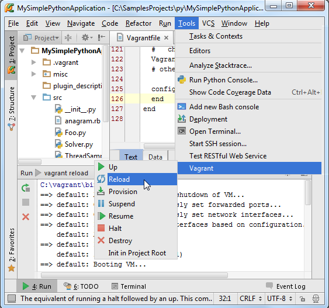
一旦重新装载了Vagrant之后，一个新的映射路径变得可用。例如我们使用SSH内置终端连接Vagrant之后，我们看到Pycharm将/vagrant文件夹中的内容映射到本地工程文件夹中，注意这里如果删除一处文件夹中的文件，两边的文件夹都会删除相应文件。
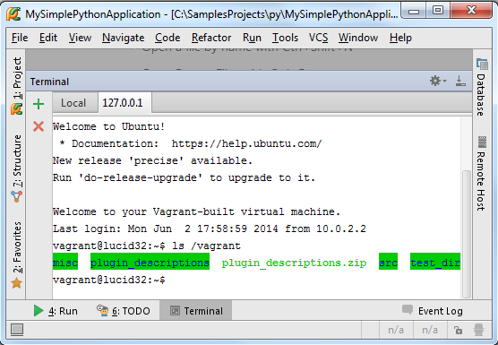
8、指定Vagrant实例文件夹
默认情况下Vagrant相关文件被放置在工程的根目录下，我们可以在工程设置窗口的Vagrant页面对其进行更改：
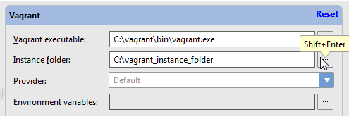
9、在设置窗口管理Vagrant插件
可以在Vagrant设置中管理相关插件，在Plugins页，使用安装/卸载/更新插件 按钮来进行管理。例如通过 VMWare Fusion Provider插件可以允许我们在VMWare环境中运行Vagrant。
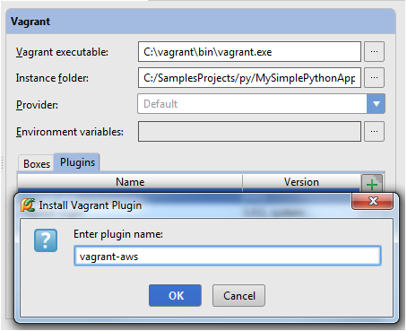
10、供应商支持
Vagrant默认与Oracle VirtualBox协同工作，这里我们可以更换供应商平台，例如VMWare、 Amazon EC2，具体参见供应商列表Vagrant plugins list。
Pycharm将供应商名称自动绑定到命令行，方便通过其来使用Vagrant。选中一个电脑上安装并设置好的供应商之后，将会通过它来执行所有的Vagrant命令：
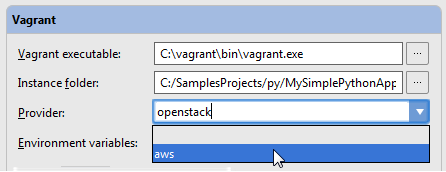
11、更换供应商支持
Tools→Vagrant→Provision用以切换供应商设置，无需关闭虚拟机。
使用Tools→Vagrant菜单命令，运行provisioning on a running environment：
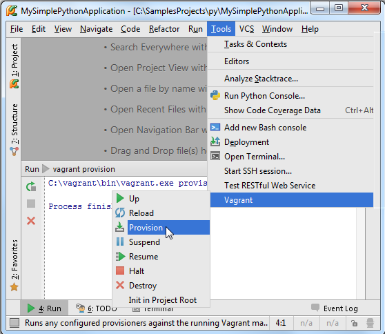
12、环境变量功能
环境变量有一下功能：
在Vagrant页面设置项目相关环境变量：
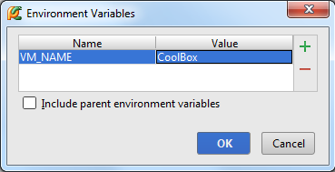
设置完成后，这些环境变量就会被加入到Vagrantfile，以#{ENV['name_of_variable']}的形式：
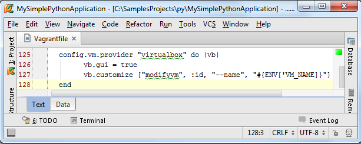